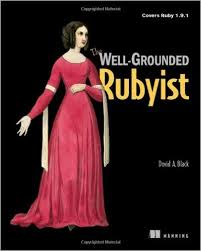
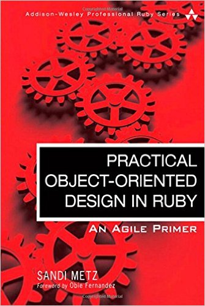

February Picks - Ruby, OOD
In February, I was focused on Ruby. While familiar with the basics of Ruby and Rails, I wanted to dive deeper and discover any details that might be useful in projects I currently have in mind. Let's get into it!
The Well-Grounded Rubyist
 This book provides a comprehensive overview of the Ruby language, introducing a bit about The Ruby Way and features that are unique to the language.
As an experienced user of other programming languages, I find Ruby easy to read and understand but there are a few features that are not obvious to the uninitiated. The Well-Grounded Rubyist shed light on those areas. Particularly relevant for me was discussion on when to use modules vs classes, and the logic behind Symbols.
This book is a great step-up for the beginning Rubyist and likely a worthy reference for the more experienced.
Practical Object-Oriented Design in Ruby
 I was quite surprised to discover that this book not only shows object-oriented design techniques using Ruby, but is actually the most succinct and clear description of general OOD that I have read. I would recommend this book if you do any OOD, even if it's not in Ruby.
Sandi Metz first introduces object-oriented principles and general coding best-practices, then takes simple examples through multiple evolutions of design and refactoring to broaden how you think of object-oriented design and expose flaws in common approaches.
The key takeaway for me was to think of design in terms of messages rather than objects. If you only think of concrete entities when coming up with objects, you will miss some important objects and introduce unnecessary coupling. When you discover this later on, refactoring is painful and expensive. I have experienced this first-hand.